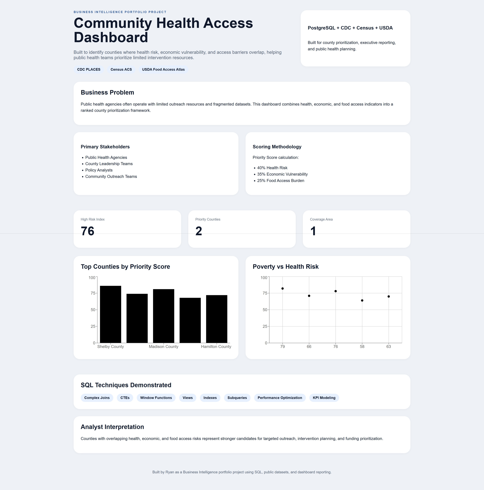

case study / data
Community Health Intelligence
County-level public health intelligence built on CDC, Census, and USDA public datasets — SQL analytics, KPI modeling, and an interactive dashboard that surfaces high-risk U.S. counties.
The problem
Public health risk in the U.S. is profoundly local — two neighboring counties can have wildly different health outcomes — but the data that explains why is scattered across three federal agencies that don't publish on the same schedule, at the same granularity, or with the same identifiers. CDC PLACES has the health measures, the Census has the population and income context, and the USDA has food access. Nothing joins them for you.
This project builds that join: an ETL pipeline that cleans and loads all three sources into PostgreSQL, a SQL layer that models county-level risk KPIs, and a dashboard that makes the result explorable by anyone — live at uscounty.health.

One hard decision
I went with county-level granularity instead of state-level, which meant dealing with the fact that CDC suppresses small-county data for privacy. Rolling those counties up into their state average would have been cleaner, and it also would have quietly erased the rural counties that are the whole reason this project is interesting. So I kept them as explicit gaps in the UI rather than filling them with a number that looks real.
What I'd do differently
I'd have checked data vintage alignment across CDC, Census, and USDA before designing the schema. They don't publish on the same cycle, and I ended up reworking the model once I realized I was joining a 2022 health measure to a 2020 population denominator.
Under the hood
- Python ETL scripts per source: CDC PLACES, Census ACS, and USDA Food Access, each cleaned and conformed to county FIPS codes
- PostgreSQL (Neon) schema with views, stored procedures, and indexes tuned for the dashboard's query patterns
- A SQL portfolio layered from beginner to advanced queries, including performance tuning, kept in the repo as a learning record
- React dashboard deployed on Netlify, reading the modeled KPIs